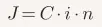

Introdução: O "Princeps Mathematicorum"
Johann Carl Friedrich Gauss (1777–1855) não foi apenas um matemático; foi a força gravitacional que reorganizou a astronomia, a geodésia, o magnetismo e a análise numérica. Sua obra Disquisitiones Arithmeticae, escrita aos 21 anos, é o marco zero da teoria moderna dos números. No entanto, para o perito judicial brasileiro, o nome de Gauss ecoa em um campo inesperado: a matemática financeira aplicada aos contratos de adesão.
Está com pressa? Pular direto para os 5 Quesitos Estratégicos de Gauss
O Gênio de Brunswick: A Base Científica da Amortização Linear
Gauss nasceu em 30 de abril de 1777, em Brunswick (hoje parte da Alemanha). Filho de pais humildes — sua mãe era semianalfabeta e seu pai um trabalhador braçal — sua ascensão foi puramente meritocrática, impulsionada por uma precocidade que beirava o sobrenatural.
Formação e Percurso Acadêmico
- Primeiros Anos: Aos três anos, corrigiu um erro de contabilidade nas contas do pai. Aos sete, realizou a famosa soma da progressão aritmética de 1 a 100 em segundos.
- Educação Formal: Sob o patrocínio do Duque de Brunswick, estudou no Collegium Carolinum e, posteriormente, na Universidade de Göttingen (1795-1798).
- Doutorado: Em 1799, na Universidade de Helmstedt, provou o Teorema Fundamental da Álgebra.
Capacidades e Limitações
A capacidade de Gauss era a de enxergar padrões onde outros viam caos. Ele possuía uma memória fotográfica e uma habilidade de cálculo mental que lhe permitia prever órbitas planetárias (como a do asteroide Ceres).
Limitação ou Caráter? Gauss era um perfeccionista extremo. Sua máxima era "Pauca sed matura" (Pouco, mas maduro). Isso significava que ele retinha descobertas por décadas até que estivessem impecáveis, o que muitas vezes impediu o progresso de outros matemáticos que "redescobriram" o que ele já sabia (como a geometria não-euclidiana).
A Criação do Método de Gauss e sua Aplicação na Prova Pericial Bancária
Diferente do que muitos pensam no campo jurídico, o "Método de Gauss" na matemática pura refere-se à Eliminação Gaussiana para resolver sistemas de equações lineares.
Gênese do Método
A necessidade surgiu da Geodésia e da Astronomia. Ao tentar determinar a órbita de Ceres em 1801, Gauss precisava lidar com grandes conjuntos de dados provenientes de observações astronômicas.
- O Problema: Como encontrar a solução mais provável para um sistema com muitas variáveis e erros de medição?
- A Solução: Ele desenvolveu o método de eliminação e o Método dos Mínimos Quadrados. A eliminação gaussiana permitia transformar uma matriz complexa em uma matriz triangular superior, facilitando a resolução por substituição retroativa.
Aplicação Prática: A Lógica da Eliminação Gaussiana
Para ilustrar como a Eliminação Gaussiana funciona na prática, vamos resolver um sistema de equações lineares simples. O objetivo é transformar a matriz original em uma matriz triangular superior (onde todos os elementos abaixo da diagonal principal são zero).
Exemplo Prático
Imagine o seguinte sistema de equações:
2x + y - z = 8
-3x - y + 2z = -11
-2x + y + 2z = -3
1. Representação em Matriz Ampliada
Primeiro, escrevemos apenas os coeficientes e os resultados:
2. Transformação em Matriz Triangular Superior (Eliminação)
O objetivo é "zerar" os números abaixo da diagonal principal (o -3, o -2 e o 1 da segunda coluna).
- • Passo A: Zerar o -3 (Linha 2). Somamos a Linha 2 com 1,5 vezes a Linha 1.
- • Passo B: Zerar o -2 (Linha 3). Somamos a Linha 3 com a Linha 1.
Após essas operações, a matriz assume este formato:
Passo C: Zerar o 2 (Linha 3, coluna 2). Subtraímos 4 vezes a Linha 2 da Linha 3.
Resultado da Matriz Triangular Superior:
(Note que agora temos um "triângulo" de zeros no canto inferior esquerdo).
3. Resolução por Substituição Retroativa
Agora que a matriz está simplificada, "voltamos" para as equações de baixo para cima:
• Da última linha: -1z = 1 ⇒ z = -1
• Da segunda linha: 0,5y + 0,5z = 1
0,5y + 0,5(-1) = 1 ⇒ 0,5y = 1,5 ⇒ y = 3
• Da primeira linha: 2x + y - z = 8
2x + 3 - (-1) = 8 ⇒ 2x + 4 = 8 ⇒ 2x = 4 ⇒ x = 2
Solução Final: x = 2, y = 3, z = -1.
Por que isso é importante para a Perícia Judicial?
No contexto da perícia, a eliminação gaussiana demonstra a linearidade e a previsibilidade do pensamento de Gauss. Enquanto a Tabela Price utiliza exponenciais (juros sobre juros), o método original de Gauss foi desenhado para simplificar sistemas complexos em passos lineares e lógicos.
Ao defender o "Método de Gauss" em juízo, estamos defendendo que o cálculo do saldo devedor deve seguir esta mesma lógica de transparência: resolver o débito passo a passo, de forma aritmética, sem ocultar a progressão do capital em fórmulas exponenciais que mascaram o anatocismo.
💻 O OLHAR DO PERITO EM TI: TRANSPARÊNCIA ALGORÍTMICA
Diferente da Tabela Price, cuja fórmula exponencial é frequentemente uma "caixa-preta" nos softwares bancários, o Método de Gauss permite total clareza. Como especialista e profissional de TI por muitos anos, audito se o algoritmo programado respeita rigorosamente a linearidade da progressão aritmética pactuada, garantindo que o cálculo seja tecnologicamente auditável pelo juízo.
O Método de Gauss no Direito Bancário Brasileiro
No Brasil, o termo "Método de Gauss" foi transposto para a matemática financeira como uma alternativa ao Sistema Francês de Amortização (Tabela Price).
A Lógica Matemática contra o Anatocismo
O argumento pericial é que, enquanto a Tabela Price utiliza juros compostos (exponenciais), o Método de Gauss — baseado em uma progressão aritmética — aplicaria juros simples sobre o saldo devedor.

Na perícia judicial, o Método de Gauss busca distribuir os juros de forma linear ao longo do tempo, evitando que os juros do mês anterior componham a base de cálculo do mês seguinte, o que configuraria o anatocismo (capitalização de juros).
Tabela Comparativa: Lógica de Amortização
| Característica | Tabela Price | Método de Gauss (Pericial) |
|---|---|---|
| Tipo de Juros | Compostos (Exponenciais) | Simples (Lineares/PA) |
| Amortização | Crescente | Baseada no coeficiente de Gauss |
| Custo Efetivo | Maior no longo prazo | Menor, sem "juros sobre juros" |
| Aceitação Judicial | Alta (Súmula 539 STJ) | Frequentemente refutada |
A Resistência do Judiciário e o Lobby Bancário
Por que, apesar da lógica de preservação do equilíbrio contratual, o Judiciário brasileiro tenta refutar o Método de Gauss?
O Argumento Técnico-Jurídico
Tribunais, influenciados pelo entendimento do Superior Tribunal de Justiça (STJ), argumentam que:
- 1. Inexistência Científica: Matemáticos acadêmicos afirmam que Gauss nunca criou um sistema de amortização para juros simples; seria uma "invenção" pericial.
- 2. Pacta Sunt Servanda: Alterar o método após a pactuação de taxas que pressupõem capitalização alteraria a base do negócio jurídico.
O Lobby e o Impacto Macroeconômico
Não se pode ignorar o peso das instituições financeiras. A substituição da Tabela Price pelo Método de Gauss em massa geraria:
- Redução Drástica do Spread: O lucro bancário sofreria uma contração severa.
- Risco Sistêmico: Bancos alegam que o custo do crédito subiria devido à incerteza jurídica.
- Lobby Setorial: A FEBRABAN atua fortemente como amicus curiae em processos de recursos repetitivos, fornecendo pareceres que rotulam o Método de Gauss como "matemática criativa
Curiosidades e Humanidade de Gauss
- O Calendário: Gauss calculou a data da Páscoa para qualquer ano passados e futuros através de um algoritmo de sua autoria.
- Magnetismo: A unidade de densidade de fluxo magnético no sistema CGS chama-se Gauss em sua homenagem
- O Diário Secreto: Gauss manteve um diário com 146 breves anotações de suas descobertas. O diário só foi descoberto 43 anos após sua morte, provando que ele estava décadas à frente de seu tempo.
Conclusão: A Genialidade Subestimada
Carl Friedrich Gauss não poderia prever que, séculos depois, seu nome seria o estandarte de uma batalha judicial nos trópicos. Sua genialidade reside na busca pela verdade absoluta dos números.
No cenário brasileiro, o Método de Gauss é mais do que uma fórmula; é uma tese de resistência. Embora o Judiciário, pressionado por dogmas econômicos e pelo setor bancário, tente enterrá-lo sob a égide da legalidade da capitalização mensal (MP 2.170-36/2001), a lógica gaussiana permanece como a prova matemática de que há caminhos mais justos e menos onerosos para o devedor.
Nota de Perícia: A utilização do Método de Gauss em laudos requer uma fundamentação robusta na Teoria das Progressões, sob pena de indeferimento.